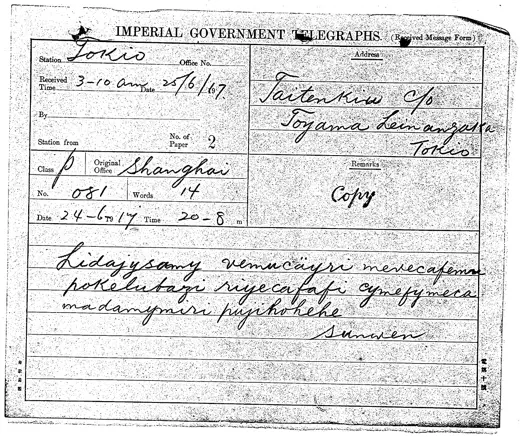
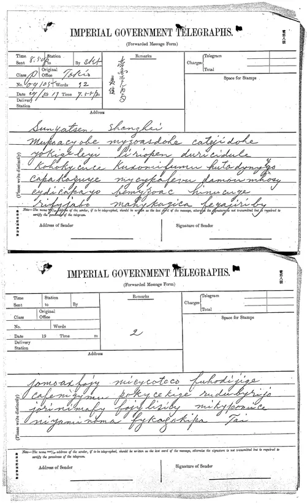

コーパス
電報を一通ずつ
1913〜1916年の電報の読み。数字の電信符号、「Hong Kong」の数字置換、圧縮符号、文密（G0・Y0）、1916年6月の数字暗号（共密・容密・辰密）を扱う。未刊電報1913〜1916年のロットは日付順、他の系列は方式別・日付順に並べる。各項目で転写、解読、読みの提案を区別する。英語の暗号電報はRosamondeを参照。 未解読の1917年6月電はページ末尾に示す。
このページの読み方
各項目は用紙から読んだ記号、電信符号、漢字を区別する。圧縮符号と文密では二音節で四桁、Hong Kongでは一字母で一桁を表す。平文の数字電報は公開の電信符号を直接用い、1916年6月のもの（共密・容密・辰密）はそれぞれの鍵を適用してから読む。原稿の区切りが分かる場合は保持し、それ以外は比較のため十字ずつに組むが、符号の境界とは限らない。
表示番号はJACARのコマ番号で、同一コマの複数の用紙は字母で区別する。新ロットで別記するPDFのページ番号とは異なることがある。未刊ロットは日付順、他の系列は方式別に日付・記載時刻順とする。文密17本文は22枚の用紙からなる。G0が7枚、Y0が15枚を合わせた10本文である。
「確実」とは、言語モデルにとってもっともらしく、前後と矛盾しないという意味で、一文字ずつの正しさを保証するものではない。「疑わしい」字が正しいこともある（固有名詞、稀な専門用語）。あくまで合図であって、判定ではない。
誤りはどこから来るか
送信者の原文から私たちの読みまでに、記号には次の三種類の誤りが生じうる。
- モールス送信。文字は点と線で伝わる。符号が一つ欠ける、増える、入れ替わると文字が変わる。e（·）が i（··）に、a（·−）が e（·）や w（·−−）になる、など。
- 日本側の筆写。職員は自分には意味のない語を手で書き写す。その筆跡では一部の文字が紛らわしい：g/q、x/d、u/n、a/o、k/h、f/b……（調査中に画像上で記録した組）。
- 私たちの読み。110年後、同じ混同がスキャン画像の上でもう一度起こる。
代案を計算する場合、表に適合する一字母違いを試し、言語モデルの尤度の増分で並べる。これは手掛かりであって訂正ではない。全ロットで計算するわけではなく、採用した提案や整列は別記し、用紙の転写は変更しない。
方法を裏付ける例
0416b号電報（7月19日）は、意味のない符号 4210 で終わる。同じ日にもう一つの系統で送られた双子の0416aは「伸皓」（伸、十九日）で終わる。一文字の誤りを探すと、まさに xefa が xifa になっていることが見つかる。モールスの誤り（· が ·· に）としても、筆写の混同（i/e）としてもありうる。訂正すると「皓」が無理なく読める。
逆に、0386号電報は「卄」（二十）で終わるが、用紙には6月30日とある。「卅」（三十）にするには p を n に変える必要があり、これは一符号のモールス誤りでも、記録された筆写の混同でもない。食い違いは説明がつかないままである。
読みやすい版と、その限界
各電報の下に、読みやすい版を示す。解読文に句読点を付け、ありそうにない字の一部を、本来意図されたと考える字に置き換えたものである。置き換えはそれぞれ三種類の根拠を突き合わせている。文の意味（電報の定型句：乞速電催、甚感、盼復……）、文脈（ほかの電報、既知の事実、電文の構造、日付の慣例）、そして文字の近さ、つまり何文字変える必要があり、その変化がモールスの誤りや筆写の混同で説明できるかである。
字にカーソルを合わせると、解読された元の字、変えた文字、理由が表示される。たとえば0406の「段無組織內閣之誕意」は意味をなさないが、「之誠意」（誠意）なら一文字違い（a が u に、モールスで · − が ·· −）である。同じ文で「放廈」は「政府」になり、いずれも一文字違いである。
画像での確認状況。提案した字母が画像に見える場合、元の字母を維持する場合、未決の場合を区別する。ブラインドか記入済み転写の校正かはロットの紹介に示す。もっともらしい提案だけでは確認済みとしない。鍵の留出検証用の0406は対象を絞った再読に用いない。
限界
- これは私たち（Brice Dudout と Claude）が意味から立てた読みの提案であり、用紙と一つずつ照合したものではない。解読文そのものは一切変えていない。
- 電報の漢文はきわめて簡潔で、同じくらいもっともらしい復元がいくつもありうる。ここでは一つだけを示す。
- 一文字の誤りは多くのことを「説明」してしまう。26文字・4位置で、一つの符号には数十の「隣人」がある。近さが論拠になるのは、意味と文脈が同じ方向を指すときだけである。
- 各電報に示す尤度の増分は必ず上がる。もっともらしい字を選んだのだから当然で、指標であって証明ではない。
- 文密では11字が疑問または判読不能で、読みの提案がない。一部の箇所（0386、0406の末尾、0498の冒頭）は復元してもなお不明である。
1917年6月の暗号電報 0509a（6月24日、孫文から戴季陶へ）と 0511a/b（6月29日、戴の返電）は1916年とは別の方式を用い、「文密」の前置きも「Cg」の標識も持たない。いずれも未解読である。以下に、Brice による用紙のブラインド判読、ありうる文字の取り違え、すでに分かっていること、試した方法、今後の方向を示す。
0509a 1917年6月24日 · 上海 → 東京


ブラインド判読（Brice）
lidajysamy vemucicyri mevecafemu
pokelubazi riyecafafi cymefymeca
madamymiri pujihohehe
用紙（JACAR B03050090200、画像 0509）：クリックで拡大
不確かな文字を含む語のみを掲げる。
| 語 | 判読 | 再読・ありうる取り違え |
|---|---|---|
| 2 | vemucicyri | 再読 xemuciiyri：1文字目は x の可能性。用紙の「ä」（モールス ·−·−）は e + k → vemucekyri |
| 3 | mevecafemu | 再読 mexecafemx：v は x かもしれない |
| 4 | pokelubazi | b か t か（公開された翻字は pokelutazi） |
| 8 | pujihohehe | 再読 pujihoheke（9文字目が k）。公開された翻字は pujihokehe |
0511a/b 1917年6月29日 · 東京 → 上海


ブラインド判読（Brice）
a muposacyobe myzoasdohe catyidohe
yokigeleyi liriopen duricidule
kohokycuce kuxomifumu hutadynyfo
capakazuye mycykafevu damowmhosy
cydicapayo bemyzoac hinucuge
rifygabo mahykagica fegajiriby
b fomoaxfojy micycoteco fuhodigige
cafenigymu pokycekige rudubyrijo
gorinimafy fogylisicy mikypowice
niyaminoma fykagokipa Tai
用紙（JACAR B03050090200、画像 0511）：クリックで拡大
不確かな文字を含む語のみを掲げる。
| 語 | 判読 | 再読・ありうる取り違え |
|---|---|---|
| a1 | muposacyobe | 10月12日の重点再読：mupsacyobe、10文字（異読 mupoacyobe）。最初の読みでは11文字で、o の前に空白と点があった |
| a2 | myzoasdohe | z を確認（書記の z は下に輪が垂れる、ʒ）。「oas」：音節の倒置か |
| a3 | catyidohe | 9文字。y か j か |
| a5 | liriopen | 8文字。「op」「en」：音節の倒置か |
| a8 | kuxomifumu | 再読 kucomufumu（確信度低）：x → c、i → u |
| a9 | hutadynyfo | 再読 hutadynyys：書記は「nygs」と書いて「nyys」に直した。最後の母音は o か a |
| a10 | capakazuye | 確認。y と m の字形が崩れている |
| a11 | mycykafevu | 再読 mycykaferu：v → r |
| a12 | damowmhosy | w か m か。「mh」は不規則。o にアクサン・シルコンフレクス。重点再読：damoumhosy（異読 damoumhory） |
| a14 | bemyzoac | 8文字。「oac」 |
| a16 | rifygabo | 8文字。書記の j を g と判読 |
| a18 | fegajiriby | j か g か |
| b1 | fomoaxfojy | 再読 jomoacfojy：f → j、x → c。「oax」 |
| b3 | fuhodigige | 書記の j を g と判読（fuhodijige か） |
| b7 | gorinimafy | j を g と判読。異読 goriximafy（n / x） |
| b8 | fogylisicy | j を g と判読（fojylisicy か） |
| b9 | mikypowice | 異読 mikyponice（w / n / m） |
| b10 | niyaminoma | 確認。異読 xiyanunoma（n / x、m / n、o / a） |
| b11 | fykagokipa | 再読 fykayokipa（または fykagokipa）：g か y か。異読 fykogokipa |
ありうる取り違え（まとめ）
- j・g・y・z：書記の j は g に似ており、下に輪が垂れる z（ʒ）は g・j・y に似る。
- n / x、m / n / w、o / a：画や輪が閉じきっていない。
- 0511 の x / c と v / r：これらを直すと、0511 の子音は17種（b c d f g h j k l m n p r s t y z）だけになる。
- 0509a は受信用紙で、モールスで送られた。「ä」（·−·−）は e + k と読める。v（···−）と x（−··−）は取り違えうる。
- 0511 の書記は自分で訂正している（抹消、上書き、補助記号）。8文字の語が4つ、9文字の語が1つあり、倒置した音節もある（「oas」「oac」「oax」「op」「en」）：下記参照。
0511 の倒置音節
0511 では、10文字の語4つに、子音ではなく母音から始まる音節（「ac」「as」「um」「ax」）が含まれる。4回とも第3音節、すなわち第5・第6文字で、語を5文字ずつに分けたときのちょうど継ぎ目にあたり、必ず o の直後に現れる。この2文字を入れ替えると語は規則的になるが、語の前半と後半を入れ替えてもそうはならない（cyobemupoa は cy ob em up oa となる）。
| 語 | 電文中の位置 | 5文字ずつの前半・後半 | 第5・第6文字を入れ替え |
|---|---|---|---|
| a1 | 第1語（a紙1行目） | mupoa ∣ cyobe | mu po ca yo be |
| a2 | 第2語（a紙1行目） | myzoa ∣ sdohe | my zo sa do he |
| a12 | 第12語（a紙4行目） | damou ∣ mhosy | da mo mu ho sy |
| b1 | 第19語（b紙の最初の語） | jomoa ∣ xfojy | jo mo xa fo jy |
a1：第3・第4文字は再読により po または ps（機械読みでは ko）と読まれるが、倒置には影響しない。a12：第5文字は10月12日の重点再読で u（最初の読みでは w）。
- 同じ一通の電報。4語はいずれも 0511（戴→孫、6月29日）にある。2語は電文の冒頭、1語は2枚目の冒頭、1語は1枚目の中ほどにある。8文字の語2つにも、後半に同じ倒置が見られる（liri ∣ op en → li ri po ne、bemy ∣ zo ac → be my zo ca）。
- 対照。モールスで受信された 0509a にも、盲読した1916年の電報紙の10文字語136語にも、倒置は一つもない（1916年の数少ない異常は母音同士の混同で、位置もばらばらである）。
- 解釈。倒置は符号ではなく、10文字の語を5文字ずつ二つに分けて書いた書き方に従っている。連続した流れの中では、第3音節は符号の前半のこともあれば後半のこともあるからである。鍵の特徴というより、0511 を書いた人物の書き癖である可能性が高い。我々の計算はすべて、この2文字を元の順に戻したうえで行っている。
- 不規則な1枚目。倒置音節、8文字の語、訂正された文字は a 紙に集中している：18語中9語、これに対し b 紙は11語中1語（その最初の語）のみ。電信係が記入した語数32（暗号語29、二語の宛名、「Tai」）は、29語という区切りを裏付けている。
すでに分かっていること
- 通信者。0509a の宛先は「TaitenKiu c/o Toyama, Reinanzaka, Tokio」、署名は「Sunwen」。「TaitenKiu」は戴季陶の筆名天仇である。0511 の末尾には平文で「Tai」とあり、戴の返電である。「Toyama, Reinanzaka」は赤坂霊南坂の頭山満邸を指す。
- 背景。1917年6月、孫文は戴季陶を日本に派遣して復辟運動を調査させ、海軍の秋山真之・陸軍の田中義一あての書簡を託した[11]。平文の仮名電報（画像0508、6月23日）が「昨夜」の到着を伝える。0509a は6月24日に上海から、0511 は6月29日に東京から発信された。張勲が溥儀を復辟させる（7月1日）2日前である。
- 構造。0509a：8語、2文字の音節40（20コード）。0511：29語、141音節。0511b を1音節ずらすと、4文字の組が4つ繰り返される（cafe が2回、0509a にも1回。kige・fojy・mafy が各2回）：頻出字であろう。
- 字母。母音6つ（a e i o u y）と、写し誤りを直したうえで子音17（b c d f g h j k l m n p r s t y z）：17 × 6 = 102 マスは、100の数を収める最小の6母音表で、1916年の Y0 表と同じ形式である。y は子音でも母音でもある。
試した方法
| 仮説 | 試した内容 | 結果 |
|---|---|---|
| 1916年の鍵 | 1916年の G0・Y0 表、1916年の圧縮符号の7つの鍵 | 文にならない |
| 1916年と同じ系統 | 線形に埋めた「n子音 × 6母音」表：機械判読で約19万4千、Brice の判読で24万1千 | 偶然以上のものはない |
| 1917年の既知の鍵 | 1917年3月の鍵（公開済み[1, 2]、3月25日の電報を解読できる）。S. Tomokiyo が公表した例から復元した山田表[8, 9] | 文にならない |
| 17または18 × 6 の表 | 行・列・蛇行・任意順で埋め、変換の有無も試した。対照：同じ計算で本物の鍵を88回中88回復元 | 否定 |
| 錨つき20 × 6 座標 | 0509a 末尾の署名文・孫文、0511 末尾の戴、日付。対照：正しい錨が2つあれば本文の70〜87%を復元 | どの錨も成り立たない |
| ありうる語 | 1917年6月に出そうな42語（田中・秋山・復辟・張勳・國會・政府・孫文など）を両立するすべての位置に当てた：2,101回 | 否定 |
暫定的な結論：1917年6月の方式は既知の鍵でも1916年型の単純な表でもない。90コードしかなく、外部の手がかりなしには特定できない。
今後の方向
- 同じ方式の暗号文をさらに：1917年6〜9月に傍受された他の電報（B03050090200 に隣接する JACAR の簿冊[4]）。「特定人ノ発受郵便物取調」の系列は第4巻以降、孫文が広東へ向かった1917年夏まで続いているか。最も有望な方向で、コードが2〜3倍あれば、用意済みの手法が再び識別力を持つ。
- 番号を付け替えた電碼本：電碼の番号が変えられていれば、標準電碼に基づく計算はすべて無力になる。その電碼本か、当時の解読（日本側の報告、国民党の档案）を探す必要がある。
- より良い画像と、不確かな箇所（補助記号、g / j / y / z、8・9文字の語）の独立した再読。
- 他の表の構造（キーワード表、二重転置など）。本文が増えてから試す。
1913〜1916年の未刊電報
管見の限り未刊の電報50通：1913〜1914年11通、1916年4月39通。日本の「特定人ノ発受郵便物取調」の写し、JACAR B03050087300〜87500・B03050088500〜88600。本調査では未検討だった巻である。Claudeの読みにBrice Dudoutによる記入済み転写の校正を適用した（ブラインドではない）。本ロットでは「Sixteenth」「Seventeenth」「Hsuweilin」「Hong Kong」の4表を新たに展示する。他の表は既存のもの（公表済みの表、史料と出所）。未確定の人物は同定しない。4月の未解読6通と1914年の不確かな3件は掲載しない。
部分的な読みを確定した全文とは扱わない。疑わしい字には印を付け、試訳で欠文を埋めない。4月14日・21日の重複語はBriceが画像で確認し、そのまま残した。校正済み転写を全文示す。升目の「?」はソルバーが整列のために補った、画像未確認の字母であり、削除も記録する。整列前の直接解読に続けて句読点付きの読みを示し、採用した提案にも印を残す。
電報50通、符号1635個。疑問386個、判読不能5個、提案6個。